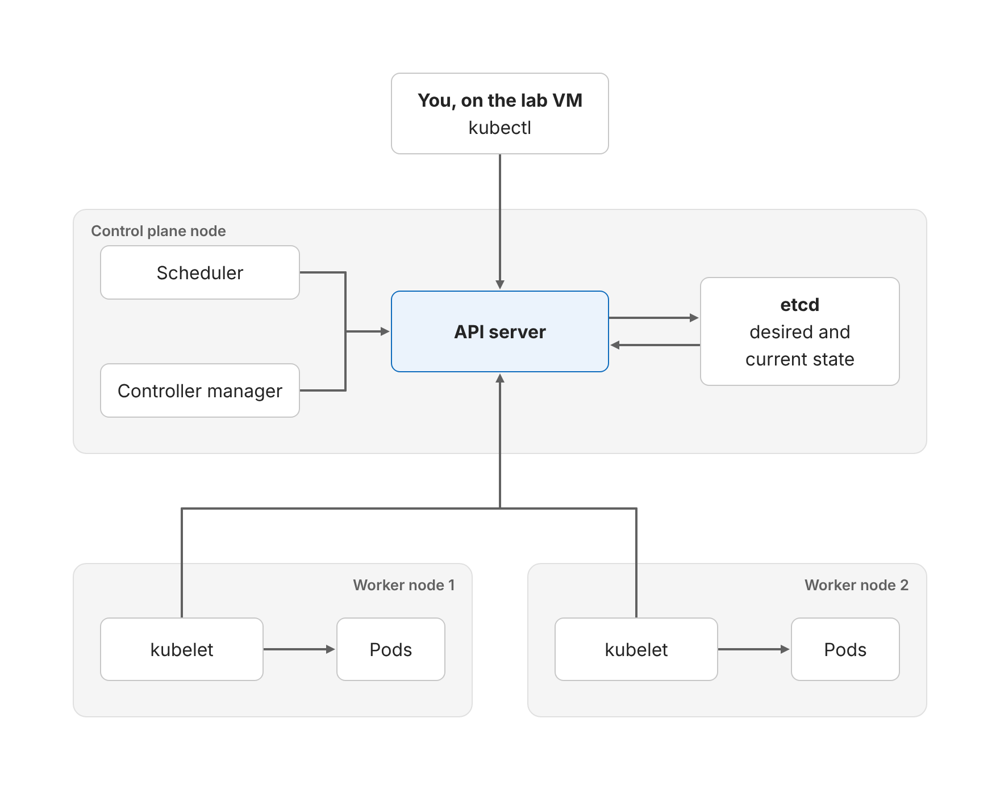
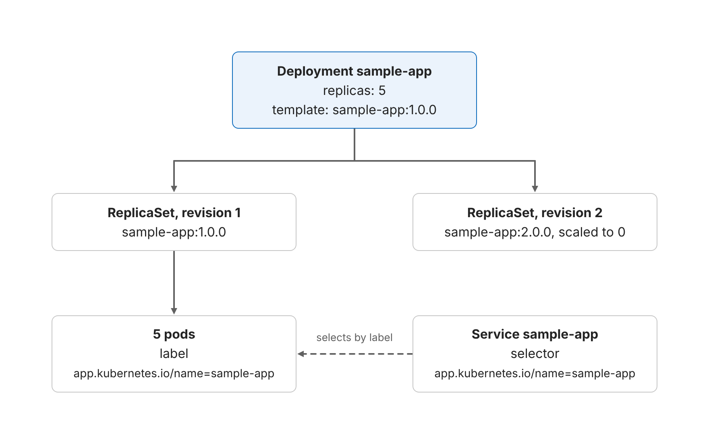
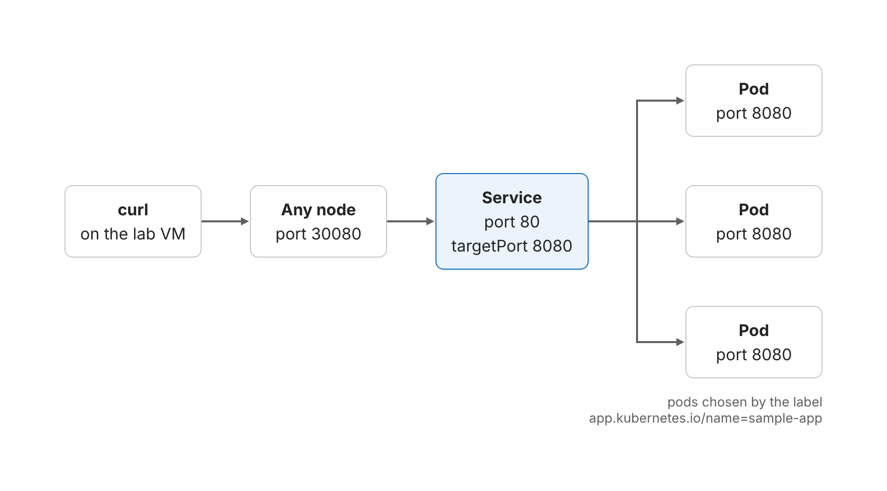
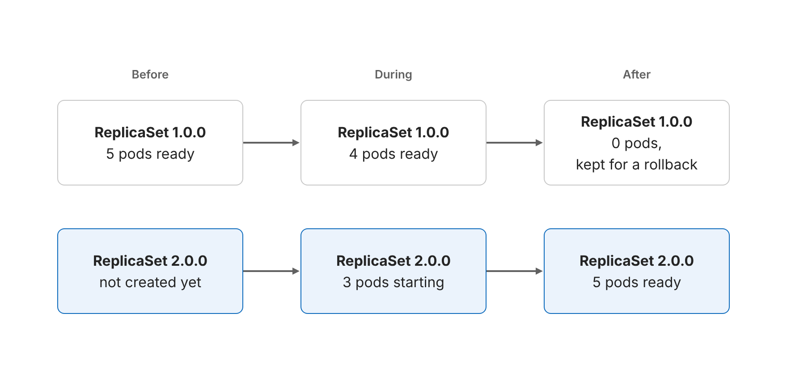

Chapter 2: Kubernetes core
This chapter still describes the former Azure lab VM. It is being rebuilt for the environment of the Setup page. Its lab already runs there, with the local registry on localhost:5001 in place of Azure Container Registry.
Chapter 1 ran one container on one machine, by hand. Kubernetes runs many containers on many machines and keeps them in the state you describe. In this chapter you create a small Kubernetes cluster on the lab VM, deploy the sample app to it from YAML files, and watch Kubernetes scale it, heal it, update it and roll it back.
What you will be able to do
- Name the parts of a Kubernetes cluster and say what each one does.
- Describe an application in YAML (namespace, Deployment, Service) and apply it declaratively.
- Use labels and selectors to connect a Service to the right pods.
- Scale a Deployment, roll out a new version, and roll it back.
- Show Kubernetes replacing a pod you deleted, and explain why it happens.
Before you start
Prerequisites
- Chapter 1 done. The image
sample-app:1.0.0and yourDockerfileare still on the lab VM. The chapter 1 registry can already be deleted, this chapter does not use it. - The lab VM started (
./course up) and an SSH session open on it (./course connect), from the kit folder on your own computer.
Time needed
About 3 hours: 75 minutes of reading and 105 minutes for the lab.
Estimated cost
The Kubernetes cluster runs inside the lab VM, so this chapter creates no new Azure resource. Prices from the Azure Retail Prices API, pay-as-you-go, region Sweden Central, in EUR, looked up on 13 November 2026.
| Item | Price | For this chapter |
|---|---|---|
| Lab VM, about 3 hours | 0.0826 per hour | 0.25 |
| Disk and public IP of the lab VM | about 0.25 per day | 0.25 |
About 0.50 EUR in total.
Concepts
What Kubernetes does, and how a cluster is built
Kubernetes is a container orchestrator. You tell it what should run, for example "three copies of this image, reachable on this port", and it starts the containers on its machines, watches them, and corrects any difference between what runs and what you asked for. That correction never stops: it is called reconciliation, and it is what makes Kubernetes heal itself.
A cluster has two kinds of members. Kubernetes components
- The control plane makes the decisions. The API server is the only entry point:
kubectland every other component talk to it. etcd is the database where the desired state and the current state are stored. The scheduler chooses a node for each new pod. The controller manager runs the control loops that reconcile, such as the one that keeps the right number of copies running. - Nodes run the workloads. On each node, the kubelet is the agent that receives pods from the API server and asks the container runtime (containerd, CRI-O or another one) to start their containers. kube-proxy, or a component that replaces it, routes Service traffic on the node.
In this chapter, kind builds the whole cluster inside Docker on the lab VM: each node is a container, and the containers of your app run inside those node containers. kind It behaves like a real cluster for everything in this chapter, but it lives and dies with the lab VM.

you delete a pod with kubectl. Which component notices that a copy is missing, and which one starts the new container?
A controller in the controller manager notices, through the API server, that fewer pods exist than requested, and creates a new pod object. The scheduler assigns it to a node, and the kubelet of that node starts its container.
Declarative and imperative
You can drive Kubernetes in two ways. Kubernetes object management
- Imperative commands say what to do now:
kubectl create deployment,kubectl scale,kubectl delete. They are quick, but leave no record of the intended state. - Declarative configuration says what should exist: you write YAML files that describe objects, and
kubectl apply -f <file or folder>makes the cluster match them. Running it again changes nothing if nothing changed. The files can live in Git, be reviewed and be applied again on another cluster.
This course works declaratively, the same way the Terraform files of the setup describe Azure resources.
kubectl diff -f <file or folder> compares your files with the cluster and prints what kubectl apply would change, without changing anything. When it prints nothing, the files describe exactly what runs. kubectl diff
Every Kubernetes object in YAML has the same four top-level fields:
| Field | Content |
|---|---|
apiVersion |
The API group and version of the object type, for example apps/v1 for a Deployment |
kind |
The type of object: Namespace, Deployment, Service |
metadata |
The name, the namespace and the labels |
spec |
The desired state, which you write |
The cluster adds a fifth field, status, with the current state. You never write it. kubectl explain <kind>.<field> describes any field from the command line, for example kubectl explain deployment.spec.replicas.
you scale a Deployment to 5 with kubectl scale, then run kubectl apply on a file that says replicas: 3. How many replicas run?
Three. kubectl apply makes the cluster match the file, and the file says 3. The imperative change was not recorded anywhere, so the next apply undid it. This is why changes go through the files.
Pods
A pod is the smallest unit Kubernetes runs: one or more containers that always run together on the same node, share one IP address and can share storage. Most pods hold a single container. Pods
Pods are disposable. When a pod dies or its node fails, Kubernetes does not repair it: a controller creates a new pod, with a new name and a new IP address. This is why you almost never create pods directly, and why nothing should rely on the address of a single pod.
why should the sample app not store anything important on the file system of its pod?
The pod can be replaced at any moment, and its replacement starts from the image again, with an empty writable layer. Anything written by the old pod is lost. Storage that survives pods is the subject of chapter 3.
ReplicaSets, Deployments and self-healing
A ReplicaSet keeps a fixed number of identical pods running. It finds its pods by their labels, counts them, and creates or deletes pods until the count matches. ReplicaSet
A Deployment manages ReplicaSets for you, and adds updates and rollbacks on top. You describe the pods once, in the pod template of the Deployment, and say how many replicas (copies) you want. Deployments

Self-healing is the reconciliation loop at work. If you delete a pod, or its container crashes, or its node disappears, the count in the ReplicaSet no longer matches and a new pod is created. Kubernetes restarts a crashed container in place, and replaces a pod that is gone.
a Deployment has 3 replicas. You delete its ReplicaSet with kubectl. What happens?
The ReplicaSet and its pods are deleted, then the Deployment controller sees that its ReplicaSet is missing and creates a new one, which creates 3 new pods. The Deployment is the object that holds the desired state.
Services
Pods come and go with new addresses, so clients need a stable way to reach them. A Service gives a set of pods one stable virtual IP address and a DNS name inside the cluster, and spreads requests across the pods. It finds the pods with a label selector, and keeps the list of their addresses in EndpointSlice objects. A pod is only listed as ready once it is ready to receive traffic. Service, EndpointSlices
A Service maps a port of its own (port) to the port the containers listen on (targetPort). Its type decides who can reach it:
| Type | Reachable from | Typical use |
|---|---|---|
ClusterIP (the default) |
Inside the cluster only, on the Service IP and DNS name | Traffic between apps |
NodePort |
Also from outside, on a fixed port of every node, by default between 30000 and 32767 | Quick access without any extra component, as in this lab |
LoadBalancer |
Also from outside, through a cloud load balancer | Chapter 6, on AKS |
In the lab, the node addresses of kind are reachable from the lab VM, so a NodePort Service lets you test the app with curl from the VM.

the Service exists, but its EndpointSlice lists no address. What is the most likely cause?
The Service selector does not match the labels of the pods, for example because of a typo in the key or the value. Compare kubectl get pods --show-labels with the selector in kubectl describe service.
Namespaces
A namespace divides one cluster into named areas. Object names must be unique within a namespace, but two namespaces can each have a Deployment called sample-app. Most commands take -n <namespace>, and without it kubectl uses the namespace called default. Some objects, such as nodes and namespaces themselves, belong to no namespace. Namespaces
A namespace on its own is not a security boundary. It becomes one when access rules and network rules are attached to it, which is the subject of chapter 4. On OpenShift, namespaces are wrapped in projects, as you will see in chapter 7.
kubectl get pods shows nothing, but you are sure the app runs. What did you forget?
The namespace. Without -n sample-app, kubectl looks in default. kubectl get pods -A lists the pods of every namespace.
Labels and selectors
A label is a key and value pair attached to an object, such as app.kubernetes.io/name: sample-app. A selector is a query on labels. Labels are how Kubernetes objects find each other: a ReplicaSet finds its pods, and a Service finds the pods to send traffic to, by selector. Labels and selectors
Kubernetes documents a set of recommended labels with the prefix app.kubernetes.io/, such as name, version and part-of, so that tools and people can read them the same way. Recommended labels
In a Deployment, spec.selector.matchLabels must match the labels in spec.template.metadata.labels, and the selector cannot be changed after the Deployment is created. Choose a stable label for it, not one that changes with each version.
why is app.kubernetes.io/version a bad choice for the selector of a Deployment?
The version changes with every release, but the selector of a Deployment cannot change after creation. A new version would need a new Deployment. Select on a label that stays the same, such as the app name, and use the version label for information only.
The kubectl commands you need
kubectl talks to the API server of the cluster named in its current context. course start 02 sets the context to kind-aro-k8s. kubectl quick reference
| Command | What it does |
|---|---|
kubectl get <kind> [-n <ns>] [-o wide or -o yaml] [--show-labels] [--watch] |
Lists objects, with more detail, as YAML, with labels, or as they change |
kubectl describe <kind> <name> -n <ns> |
Shows an object in detail, with recent events at the end. The first command to run when something is wrong |
kubectl apply -f <file or folder> |
Creates or updates objects from YAML |
kubectl delete <kind> <name> -n <ns> or kubectl delete -f <file> |
Deletes objects |
kubectl logs <pod> -n <ns> |
Shows the output of a container, like docker logs |
kubectl exec -it <pod> -n <ns> -- <command> |
Runs a command in a container, like docker exec |
kubectl rollout status, history, undo deployment/<name> -n <ns> |
Follows, lists and reverts the rollouts of a Deployment |
kubectl explain <kind>.<field> |
Documents any field |
kubectl create deployment <name> --image=<image> --dry-run=client -o yaml |
Prints a starting YAML file without creating anything |
a pod stays in the Pending state. Which command shows why?
kubectl describe pod <name> -n <namespace>. The events at the end of the output say what the scheduler or the kubelet is waiting for, such as missing resources or an image that cannot be pulled.
Rolling updates and rollbacks
When you change the pod template of a Deployment, for example the image tag, the Deployment creates a new ReplicaSet and moves the replicas over gradually: it starts new pods, waits for them to be ready, and removes old ones. By default, it allows up to 25% more pods than requested (maxSurge) and up to 25% fewer ready pods (maxUnavailable) during the change, so the app stays available. Rolling update

Each change of the template is a revision. The old ReplicaSets are kept, scaled to zero (10 of them by default), so that kubectl rollout undo can bring the previous template back. A rollback is itself a new revision: after rolling out version 2 (revision 2) and undoing it, the Deployment is at revision 3, running the template of revision 1. Changing only the number of replicas is not a new revision. Rolling back a Deployment
kubectl rollout undo is an imperative command: your YAML file still describes the version you rolled back from. Update the file afterwards, or the next kubectl apply rolls the bad version out again. kubectl diff shows the gap.
during a rolling update, the new pods never become ready. Does the app stop answering?
No. The Deployment only removes old pods as new ones become ready, within the maxUnavailable limit, so the old version keeps serving. The rollout stalls, kubectl rollout status waits, and kubectl rollout undo returns to the previous revision.
Images in a kind cluster
The nodes of a kind cluster do not see the images of the Docker engine on the lab VM. kind load docker-image <image> --name aro-k8s copies an image into every node. kind quick start
When a tag other than latest is used, the default image pull policy is IfNotPresent: the kubelet uses the image already on the node and never contacts a registry. With latest, it tries to pull from Docker Hub and fails, because the image only exists locally. Image pull policy
after you roll out sample-app:2.0.0, the new pods show ErrImagePull. What did you forget?
To load the new image into the cluster with kind load docker-image sample-app:2.0.0 --name aro-k8s. Building it on the lab VM is not enough. The old pods keep running meanwhile, because the rollout waits for the new ones.
Knowledge check
Pick an answer, then check it. The explanation opens below each question.
-
Which component stores the desired state of the cluster?
Answer and explanation
Answer: B. etcd.
etcd is the database of the control plane, and the API server is the only component that reads and writes it. The kubelet runs pods on a node, the scheduler places pods on nodes, and kube-proxy routes Service traffic. See Kubernetes components.
-
You delete one pod of a Deployment that has 5 replicas. What happens next?
Answer and explanation
Answer: C. Its ReplicaSet creates a new pod with a new name, to get back to 5.
The ReplicaSet counts the pods that match its selector and creates a new one as soon as the count drops. Pods are never repaired or recreated with the same identity: the new pod has a new name and a new IP address. The other pods are not touched. See ReplicaSet.
-
A Service of type
NodePortwithport: 80,targetPort: 8080andnodePort: 30080receives a request on port 30080 of a node. Where does the request go?Answer and explanation
Answer: B. To port 8080 of one of the selected pods.
The node port (30080) is the entry point on every node,
port(80) is the port of the Service inside the cluster, andtargetPort(8080) is the port of the containers. The Service sends each request to one ready pod among those its selector matches. See Service. -
You run
kubectl rollout undoafter a bad rollout to version 2.0.0. What is still true afterwards?Answer and explanation
Answer: A. Your YAML file still says 2.0.0, so the next
kubectl applybrings it back unless you change the file.rollout undochanges the cluster, not your files. The ReplicaSet of 2.0.0 is kept, scaled to zero, for a later rollback. The Deployment moves to a new revision (3 in the lab), not back to 1, and the pods of 1.0.0 are new pods with new names. See Rolling back a Deployment. -
Why does the lab use a
NodePortService rather thanClusterIP?Answer and explanation
Answer: C. A
NodePortService is reachable from outside the cluster, here from the lab VM, without any extra component.A
ClusterIPService selects pods just as well, but is only reachable from inside the cluster.NodePortis not faster, and kind supports both types. Chapter 3 covers better ways to expose an app. See Service types.
Lab
The lab sheet holds this lab on one page, for a second screen or for printing.
Goal
Run the sample app on Kubernetes from YAML files that you wrote: three replicas behind a Service, scaled to five, healed after a deleted pod, updated to version 2.0.0, and rolled back to 1.0.0.
Tasks
Write your YAML files in ~/work/02-kubernetes-core on the lab VM, with the extension .yaml, and apply every change with kubectl apply -f. Put metadata.namespace in the files of the Deployment and the Service. The validation script follows the same seven stages.
- Create a namespace called
sample-app.Hint 1, where to look
Every object needs
apiVersion,kindand a name undermetadata.kubectl create namespace <name> --dry-run=client -o yamlprints a file to start from, without creating anything.Hint 2, the shape of the answer
A Namespace is four lines:
apiVersion: v1,kind: Namespace, andnameundermetadata. Apply it withkubectl apply -f <file>. - In that namespace, create a Deployment called
sample-appthat runs 3 replicas ofsample-app:1.0.0. Label the podsapp.kubernetes.io/name: sample-appand use that label as the selector. Declare container port 8080.Hint 1, where to look
kubectl create deployment <name> --image=<image> --dry-run=client -o yamlprints a Deployment that you can save and edit. The label goes in two places, see Labels and selectors.Hint 2, the shape of the answer
Under
specyou needreplicas,selector.matchLabelsandtemplate. The template has its ownmetadata.labels, which must contain the label of the selector, andspec.containerswith a name, an image andports.containerPort. Putnamespaceunder the top-levelmetadata. - Expose the pods with a Service called
sample-app, of typeNodePort, on port 80, sending traffic to port 8080 of the pods, with node port 30080. Call the app through the Service from the lab VM several times and look at the host names in the answers.Hint 1, where to look
A Service has a type, a selector and a list of ports. One port entry can carry three numbers, and the Services section says which is which.
Hint 2, the shape of the answer
spec.typeisNodePort.spec.selectorrepeats the label of the pods. One entry underspec.portshasportfor the Service,targetPortfor the container andnodePortfor every node. Find a node address withkubectl get nodes -o wideand call it withcurl. - Scale the Deployment to 5 replicas by changing your file.
Hint 1, where to look
The number of replicas is one field of the Deployment. Change it in the file, not with a command.
Hint 2, the shape of the answer
Edit
spec.replicas, runkubectl apply -fon the file again, and watch the pods withkubectl -n sample-app get pods --watch. - Delete one pod and watch Kubernetes replace it. Note the names before and after.
Hint 1, where to look
kubectl get podslists the names andkubectl delete podremoves one. Both need-n sample-app.Hint 2, the shape of the answer
Compare the two lists: one name is gone and a new one, with a younger age, took its place.
kubectl -n sample-app describe replicasetshows the event that created it. - Build
sample-app:2.0.0from your chapter 1 Dockerfile, with the version set to 2.0.0, load it into the cluster, and roll it out by changing your file. Watch the rollout and call the app during it.Hint 1, where to look
Three steps: build the image with the new version and tag, copy it into the nodes of the cluster, and change the image in the Deployment file. Images in a kind cluster explains the second step.
Hint 2, the shape of the answer
Build as in chapter 1, with your version argument set to 2.0.0 and the tag
sample-app:2.0.0. Load it withkind load docker-image sample-app:2.0.0 --name aro-k8s. Edit the image line of your file and apply it, then follow withkubectl -n sample-app rollout status deployment/sample-app. - Roll back to the previous revision with
kubectl rollout undo, then make your files match the cluster again: edit them untilkubectl -n sample-app diff -f ~/work/02-kubernetes-coreprints nothing.Hint 1, where to look
kubectl rollout historyshows the revisions andkubectl rollout undogoes back one. Afterwards the cluster and your file disagree, andkubectl diffshows where.Hint 2, the shape of the answer
Run
kubectl -n sample-app rollout undo deployment/sample-app. Then set the image in your file back to the version that runs, and check thatkubectl -n sample-app diff -f ~/work/02-kubernetes-coreprints nothing.
Stretch goal: add a readiness probe on /healthz to the container, so that a pod only receives traffic once the app answers.
Acceptance criteria
course check 02 checks every line below. A criterion that is not met is a [FAIL], unless the line says that it is a warning. The cluster itself is checked first: 3 ready nodes, 1 control plane and 2 workers.
Stage 1, the namespace:
- The files in
~/work/02-kubernetes-coreare valid YAML and describe a Namespace calledsample-app. - The namespace exists in the cluster.
Stage 2, the Deployment:
- The Deployment
sample-appexists in the namespace and one of your files describes it. A file withoutmetadata.namespaceis a warning. - It was applied with
kubectl apply. No trace of it is a warning. - Its pods carry the label
app.kubernetes.io/name=sample-app, and its selector uses that label. - It runs
sample-appwith a fixed tag, neverlatest. - The container declares port 8080. Not declaring it is a warning.
- All its replicas are ready.
Stage 3, the Service:
- The Service
sample-appexists and one of your files describes it. - It is of type
NodePort, listens on port 80, targets port 8080 and uses node port 30080. - Its selector uses
app.kubernetes.io/name=sample-app, and every label it asks for is on the pods. - It has one ready endpoint per pod.
GET /healthzthrough node port 30080 answers 200, and 20 requests to/are answered by at least 2 different pods. One pod answering all of them is a warning.
Stage 4, scaling:
- The Deployment asks for 5 replicas, 5 are ready, and your file says 5 too.
Stage 5, self-healing:
- Every pod of the app belongs to a ReplicaSet. A pod created by hand is a warning.
- With
--guided: while the stage is open, one pod disappears and another one takes over.
Stage 6, the rollout:
- The image
sample-app:2.0.0exists on the lab VM and is loaded on both worker nodes. - One ReplicaSet of the Deployment runs or ran
2.0.0. - No rollout is in progress or stuck.
Stage 7, the rollback:
- The Deployment runs the
1.0.0image again, andGET /reports version 1.0.0. - The Deployment is at revision 3 or more. A lower revision is a warning.
- Your files match the cluster:
kubectl difffinds no difference.
Live tests, only with --deep:
- The validator deletes one pod, and 5 pods are ready again within 60 seconds.
- A temporary pod in the namespace reaches the Service by its name,
http://sample-app/healthz.
Checked by you, because no script can:
- You can explain which controller replaced the deleted pod, and what the scheduler and the kubelet did next.
- You called the app during the rollout and saw both versions answer.
Useful starting points, without giving the solution away: the Concepts section above lists every field and command you need, kubectl explain documents any field, and kubectl create deployment --dry-run=client -o yaml prints a starting file. To call a node port from the VM, find the address of a node with kubectl get nodes -o wide.
Run setup, validate and teardown
In your SSH session on the lab VM:
On the lab VM (bash)
# 1. Setup: creates the kind cluster and loads sample-app:1.0.0
course start 02
# 2. Do the tasks. The guided check follows you: task, check, hints
course check 02 --guided
# 3. Full report at the end. It changes nothing
course check 02
# 4. Optional: the full report with the live tests
course check 02 --deep
# 5. Clean up, once the report passes: deletes the kind cluster
course clean 02
course start 02 creates the cluster from labs/02-kubernetes-core/kind-cluster.yaml in the kit, which pins the Kubernetes version, waits for the nodes and loads sample-app:1.0.0 into them. Creating the cluster takes 1 to 3 minutes.
If the lab VM was stopped and started again, check the cluster with kubectl get nodes after you reconnect. Whether a kind cluster comes back after a reboot of its machine depends on Docker restarting the node containers (not verified for this version of kind). If the nodes are not Ready after a few minutes, delete the cluster with course clean 02, run course start 02 again and apply your files again.
Each task has two hints, to open one at a time. If you are still stuck after 20 minutes, compare with the reference solution. course solution 02 copies its files into your work folder after asking, and keeps your own files aside.
How the validation works
The guided check shows one stage at a time: the task, then where you stand. Do the task in a second terminal, which you open from your own computer with ./course connect, then press Enter to check. A check that fails comes with a hint. Quit with q whenever you like: the script keeps no state and reads your work each time, so the next run resumes at the first stage that does not pass.
Stage 5 is the exception. Nothing in the cluster shows afterwards that you deleted a pod, so the guided check notes the pod names when the stage opens and looks for a replaced pod when you press Enter. Keep it open while you delete the pod. In a full report this check is left out, unless --deep lets the validator delete a pod itself.
The full report runs every stage at once. Each line is a [PASS], a [FAIL] with a hint, a [WARN] for something that works but that you should improve, or a [SKIP] for a check that was left out. The exit code is 0 when no check fails. course check 02 --stage 3 reports on one stage only.
The report and the guided check are read-only: they read your YAML files and the cluster, and send GET requests to the app. Only --deep changes something. It deletes one pod of your Deployment, which the ReplicaSet replaces, and runs a temporary busybox pod, which it removes. That pod needs the nodes to reach Docker Hub. When they cannot, the test ends with a warning. The live tests never touch your files or your Azure resources.
Break it and fix it
Once the lab passes, practise the other half of the job: finding out why something that worked no longer does. course break 02 changes one object of your namespace with a kubectl command, the way a hurried colleague would. There are four faults, and the script tells you only what a user would report.
On the lab VM (bash)
# 1. Inject one fault, after a confirmation
course break 02
# 2. Investigate, then say what the cause is
course break 02 --diagnose
# 3. Repair it, then confirm
course check 02
# Or give up and put the lab back as it was
course break 02 --restore
Investigate with kubectl get, kubectl describe, kubectl logs and kubectl diff. Do not run course check 02 before you have a diagnosis, because its report names the fault. Each run of course break 02 injects another fault, until you have seen them all. The script never touches your YAML files or Azure, so your files always describe the lab as it was. Do this before course clean 02, which deletes the cluster.
Clean up and cost check
- Run
course clean 02on the lab VM once the full report passes. It deletes the kind cluster and lists what is still taggedcourse=aro-k8sin Azure. Your YAML files and your images stay on the VM. - From your own computer, deallocate the VM:
./course stop. - This chapter adds no Azure resource, so Cost analysis only shows the lab VM, its disk and its IP address.
- If you take a long break before chapter 3, destroy the lab with
./course destroyand recreate it later with./course up. You then rebuild the images from your Dockerfile.
Sources
Prices: Azure Retail Prices API, queried on 13 November 2026 with armSkuName eq 'Standard_D2as_v5' and armRegionName eq 'swedencentral', currency EUR.
- Kubernetes components
- Kubernetes object management
- Pods
- ReplicaSet
- Deployments
- Service
- EndpointSlices
- Namespaces
- Labels and selectors
- Recommended labels
- kubectl quick reference
- kubectl diff
- Images and image pull policy
- Install kubectl on Linux, version skew
- kind quick start
- kind configuration
- kind known issues
- kind release v0.33.0